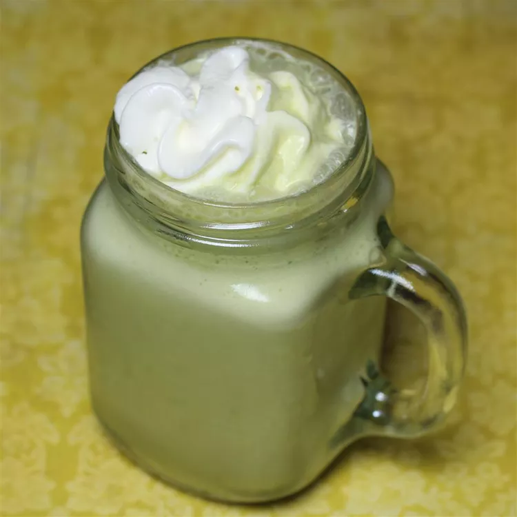

Home Page
Matcha Frappe

Try this matcha frappé for a creamy, delicious drink that rivals the ones
you'd get at that well-known coffee chain. I use DōMatcha green tea powder
as it's the best quality around. It is expensive, but a little goes a long
way..
Ingredients
- 1 cup milk
- 5 ice cubes, or as needed
- 1 tablespoon vanilla-flavored syrup (such as Torani®)
- 1 teaspoon matcha green tea powder, or more to taste
- 1 tablespoon whipped cream, or to taste
Steps
-
Blend milk, ice, vanilla syrup, and green tea powder in a blender to
desired consistency. Serve with whipped cream on top.